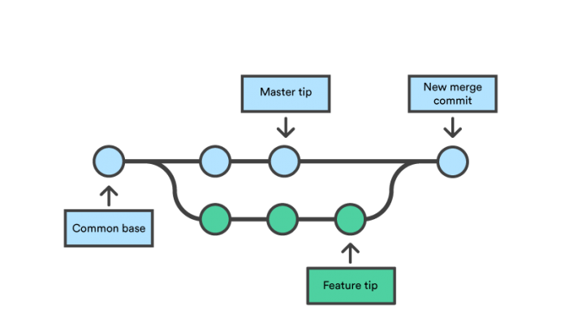
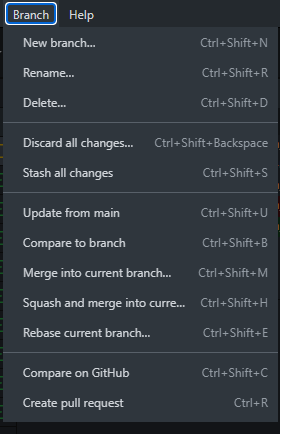
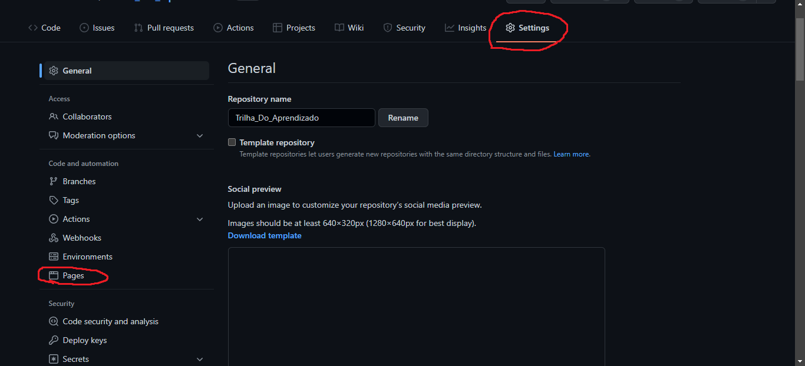

As Branches são basicamente o significado de sua tradução, são como galhos de uma arvore, ou seja ramificações de algo principal como no exemplo abaixo
Podemos ver na imagem acima como funciona graficamente as Branches, vemos que são braços, galhos, ramificações de um repositorio.
Agora olhando o exemplo acima conseguimos explicar melhor o que é uma branch e para que é utilizada. Vemos que podemos utilizar a branch como metodo de varias pessoas alterarem o codigo e mexerem nele, sem alterar o principal e conseguindo juntar tudo depois de pronto, maneira muito eficaz para mudança de codigo em grupos grandes como em empresas
Agora veremos como criar e mesclar as branches na imagem abaixo
na imagem vemos a opção new branch que é para criar a branch e a marge into current branch para mesclas as branch
a Hospedagem não é nada mais nada menos que alocar o seu site em um servidor com a criaçãod e um ip para que as outras pessoas possam acessar o site de maneira online. Para hospedar o site no git hub não é muito complexo e sera apresentado abaixo
Para hospedar basta ir nas configurações da sua pagina de branch, e depois ir selecionar a branch que deseja colocar no ar e salvar. gerara um link onde estara hospedado seu site